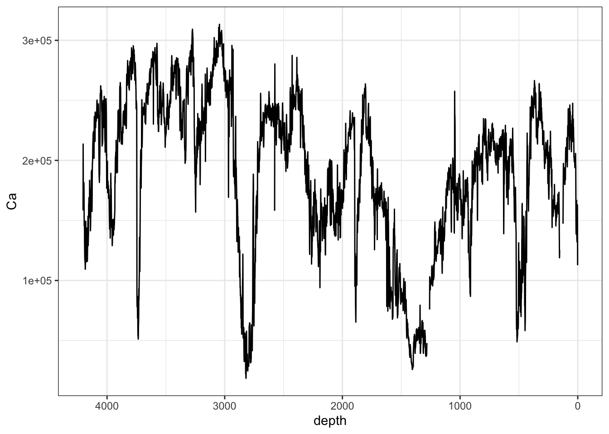

6.1 Correlation Coefficients
The Pearson’s R correlation coefficient is occasionally used to study the relationships between individual elements. It is often useful in conjunction with principle component analysis.
itrax_correlation(CD166_19_xrf) %>%
ggcorrplot::ggcorrplot(hc.order = TRUE,
p.mat = ggcorrplot::cor_pmat(., method = "spearman"),
insig = "blank")